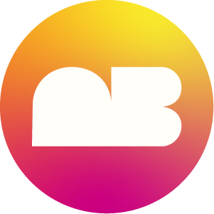

Product engineering
Turning real tickets into product fixes, working behavior, and testable improvements.

Adonnis BlakeProduct Engineer · AI Build · UXPortfolio / 2026
I’m Adonnis Blake — a Product Engineer turning problem tickets into shipped, tested product solutions with Claude, GitHub, live testing, and a designer’s eye for clarity.
The quick read
Simple first. More detail when it helps. My focus has shifted toward product engineering: reading the ticket, using Claude to move faster, testing the solution live, and keeping the experience clear enough for real users to understand.
Turning real tickets into product fixes, working behavior, and testable improvements.
Using Claude as a build partner to reason through code, edge cases, and solution paths.
Checking changes against the actual product so the work moves past theory into proof.
Keeping UI/UX, hierarchy, and user understanding as the quality bar underneath the code.
Product engineering workflow
I can’t show every internal ticket or codebase, so this section explains the repeatable workflow: understand the ticket, use Claude to reason through options, make the smallest safe change, test the behavior live, then document what changed.
AI-assisted product loop
What it is:The ticket is the source of the product problem: expected behavior, current behavior, user impact, and the constraints around the fix.
How I use it:I slow the issue down before touching the build. I look for what needs to change, what could break, and what “done” should look like in the product.
Why it matters:The solution starts with the actual problem instead of guessing from the interface alone.
What it is:Claude is a reasoning and build partner that helps compare code paths, possible causes, edge cases, and implementation options.
How I use it:I use it like a senior pair-programming assistant: ask better questions, test assumptions, compare possible fixes, and avoid overbuilding the solution.
Why it matters:AI helps me move faster, but the work stays connected to the ticket, the user need, and the product behavior I need to prove.
What it is:The build step turns the reasoning into a working change: UI behavior, product logic, layout adjustment, or bug fix.
How I use it:I aim for the smallest safe change first. The goal is not to complicate the code — it is to make the product behave correctly.
Why it matters:Smaller changes are easier to review, easier to test, and easier to explain to the people depending on the product.
What it is:Live testing checks the change inside the actual product flow instead of only trusting the code, the mockup, or the AI suggestion.
How I use it:I test the before-and-after behavior, make sure the expected result happens, and watch for anything that feels confusing or broken for the user.
Why it matters:The work becomes proof-based: ticket → build → observed behavior.
What it is:Documentation explains what changed, why it changed, how it was tested, and what someone else should know when reviewing the work.
How I use it:I capture the important decisions, test notes, and product behavior so the solution is easier to review, revisit, and build on later.
Why it matters:Clear documentation turns a fix into shared understanding — and that is where design judgment supports engineering work.
Selected work
Each card gives the basic story. The product engineering focus leads; the design work supports the system behind it.
Product Engineering · AI-assisted app build
Web Strategy · Interior Design
Brand System · Character Merch
Brand Identity · Environmental Graphics
Featured case / Product Engineering
2DAY is still a product build journey, but the focus now sits closer to product engineering: translate the user goal, shape the logic, use AI assistance to accelerate the build, test the working version, and keep the interface simple enough that the next action is obvious.
Actual app layout
Web strategy / Interior design
The goal was not just to make pages prettier. It was to restructure the experience so services, proof, portfolio work, and contact paths made sense faster.
Use the live site as the reference point for what exists now.
Open current siteA platform-flexible static direction with Home, About, Commercial, Residential, Portfolio, Journal, and Contact.
Open revampHelp visitors understand what Society 5ive does, where it works, and why the projects matter.
Brand identity / Neighbors Bar
Warm, loud, approachable, and built to work from a tiny bottle label to a huge painted wall.
Identity examples
Open the project to see logo marks, mood boards, signage, mural proof, and environmental applications.
Brand system / Only In Naples
Captain, golfer, patriotic local, shirt-back graphic, and social proof all show how one character system can stretch across merch and community moments.
Method
Start with the ticket. Understand what broke or what needs to improve. Use AI to accelerate the solve. Test it live. Keep the interface clear.
Understand the issue, expected behavior, user impact, and where the change lives.
Use Claude and product logic to reason through the path before changing the product.
Implement the solution, test it live, and check whether the user path still makes sense.
Keep the reasoning clear enough for GitHub, teammates, and future iterations.
Contact
Send the basics. I’ll help break it down into the ticket, the user impact, the likely solution path, and the version worth testing.